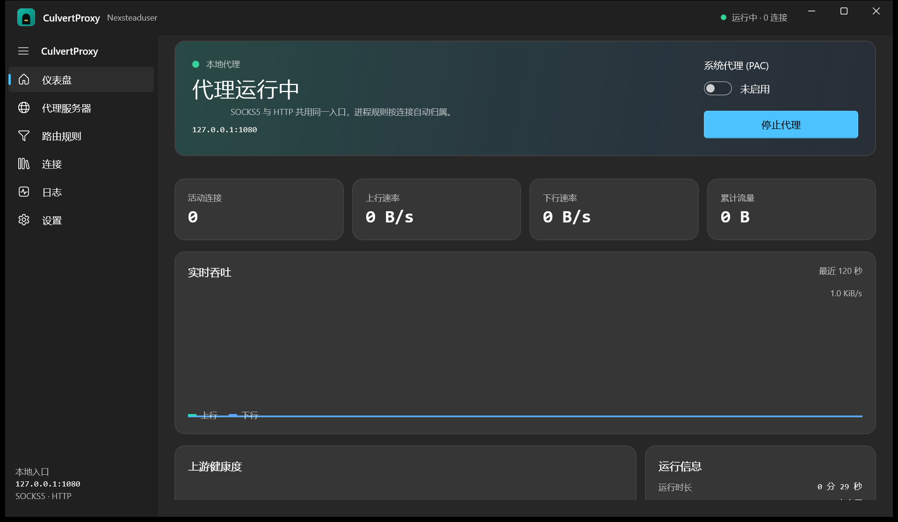

进程级透明接管
注入当前用户的 x64 进程，拦截 getaddrinfo、GetAddrInfoW、connect、WSAConnect 与异步 ConnectEx。应用不需要改配置。
v1.0.2 正式版，Windows 11 x64
CulvertProxy 在 Winsock 层接管 Windows 应用的 TCP 连接。按进程、域名、IP 和端口分流到 SOCKS5 / HTTP 上游，DNS 收口、链路伪装与失败关闭一起处理。
应用进程
chrome.exe / connect(target:443)
CulvertHook.dll
getaddrinfo → 198.19.0.1
路由引擎
match：进程 / 域名 / 端口
上游链路
香港中转 → 东京落地
目标
docs.example.com:443
不是系统代理。是进程级接管。
浏览器之外的桌面程序、游戏启动器、命令行工具与自带网络栈的应用，都在同一套规则里。
系统代理只覆盖愿意读取 WinINET / PAC 的应用。内核驱动覆盖最广，但需要签名、安装和更高的故障代价。CulvertProxy 选择中间那条路：用户态注入，按连接接管。
| 维度 | 系统代理 | 内核级接管 | CulvertProxy |
|---|---|---|---|
| 覆盖范围 | 浏览器与读取 PAC 的应用 | 系统级，包含服务与原始套接字 | 当前用户的 x64 进程 |
| 部署方式 | 改当前用户设置 | 安装驱动，通常需要签名 | 运行一个自包含程序 |
| UDP | 应用自行决定 | 可以做透明重定向 | 阻断 fake-IP 的 QUIC，促使回落 TCP |
| 失败行为 | 应用可能绕过代理 | 由驱动规则决定 | 规则阻断或链路失败即断开 |
不是给单个应用填一个代理地址，而是把进程、域名、链路、DNS 和故障策略放在同一张路由表里。
注入当前用户的 x64 进程，拦截 getaddrinfo、GetAddrInfoW、connect、WSAConnect 与异步 ConnectEx。应用不需要改配置。
按进程名或完整路径、域名通配与正则、IP CIDR、端口以及 TCP / UDP 维度匹配。直连、代理、阻断三种动作，首条命中生效。
进程 / 域名 / IP / 端口上游可以是 SOCKS5 或 HTTP CONNECT，支持多跳串联、TLS 包装、独立 SNI、自签证书与叶证书 SHA-256 固定。故障转移、延迟优先、随机出口和目标粘滞按需切换。
SOCKS5、HTTP、TLSDoH 可以走代理；静态 hosts、本地 DNS 与 fake-IP 覆盖绕过 getaddrinfo 的解析器。fake-IP 只在透明接管真正运行时下发，避免拿到无法连接的地址。
默认策略或显式规则指向代理时，策略缺失、链路全部失败或没有可用链路都会断开连接。不会为了“先连上”而把真实地址暴露出去。
fail-closed实时吞吐、活动连接、进程归属、命中的规则与链路、上下行字节数都在界面里。连接可以手动取消，日志分级落盘。
连接表、实时速率、日志首次启动配置向导、PAC 系统代理、托盘、关闭或最小化到托盘、开机启动与深浅色主题。无界面场景使用随包附带的 culvert.exe。
通过 stdio 把状态、连接、规则和链路控制暴露给 AI 客户端。CLI 使用当前用户隔离的命名管道连接界面进程，不新增网络监听端口。
MCP、stdio、命名管道仪表盘同时给出入口状态、实时吞吐、上游健康度和运行信息；连接页把每一条连接归到具体进程与命中规则。

Windows 11 24H2 或更高版本，x64
提供便携 ZIP、按用户安装的 MSI 和签名 MSIX。解压或安装后运行 CulvertProxy.exe；无界面模式与 MCP 使用 cli\culvert.exe。
CulvertProxy 的能力来自用户态 Winsock，不是万能内核层。下面这些限制是设计的一部分，不是遗漏。